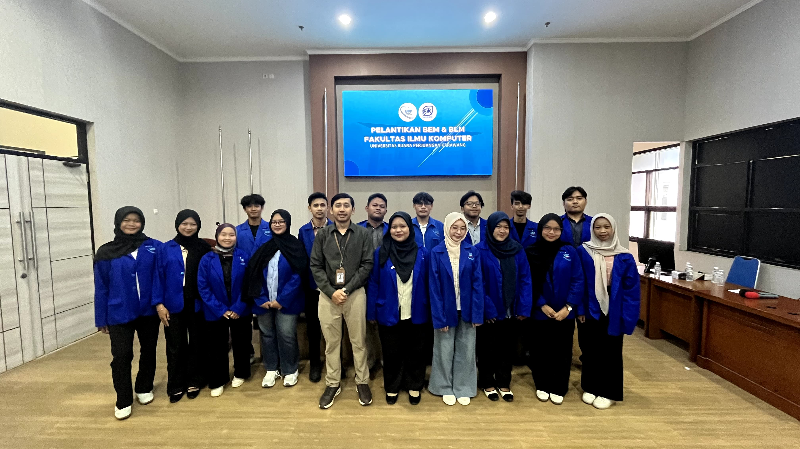
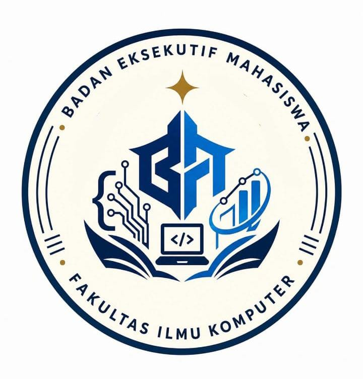

Badan Eksekutif Mahasiswa Fakultas Ilmu Komputer merupakan organisasi kemahasiswaan yang menjadi wadah kolaborasi, aspirasi, inovasi, serta pengembangan potensi mahasiswa dalam mewujudkan lingkungan akademik yang aktif, progresif, dan berdampak.

Memuat data profil organisasi...
Menjalin kerja sama antar mahasiswa, organisasi, dan civitas akademika.
Menghasilkan program kerja kreatif yang memberi manfaat nyata.
Menjadi jembatan aspirasi mahasiswa secara cepat dan terbuka.
Mengutamakan tanggung jawab, profesionalisme, dan transparansi.
Memuat visi...
Memuat misi...
Nilai-nilai yang menjadi pedoman seluruh pengurus dalam menjalankan organisasi.
Menjunjung tinggi kejujuran, tanggung jawab, dan profesionalisme.
Bekerja sama dan saling mendukung untuk mencapai tujuan organisasi.
Menghasilkan ide kreatif dan solusi yang berdampak bagi mahasiswa.
Mengutamakan pelayanan terbaik kepada seluruh mahasiswa.
BEM FIK hadir sebagai wadah bagi mahasiswa untuk berkembang, berkolaborasi, menyampaikan aspirasi, serta menciptakan program-program yang memberikan dampak positif bagi lingkungan kampus maupun masyarakat.